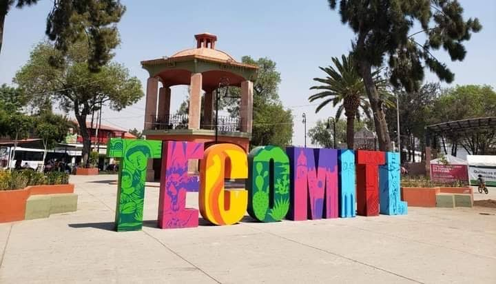
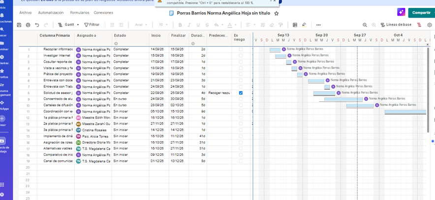

En las 3 primarias del Barrio San Antonio Tecomitl, alcaldía Milpa Alta.

Pretender que los padres acepten un cambio ante costumbres normalizadas, orientar a la comunidad sobre los derechos de la niñez y capacitar sobre crianza positiva en 3 meses.
Uso de tecnología para coordinación interdisciplinaria.
